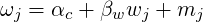
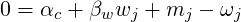
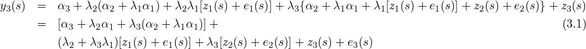

Chapter 3
Manipulating the random field and more than one likelihood
3.1 Measurement error model
An improved version of this content is part of the book available at http://www.r-inla.org/spde-book,
whose Gitbook version is freely available along all the code and datasets. We strongly
recommend to consider this.
Here we focus on a similar situation of the misalignement model example in the last
Chapter of [Blangiardo and Cameletti, 2015]. Here we extend the model to consider a
a spatially structured error. We also have a response y and a covariate c and the
misalignment.
3.1.1 The model
We consider the following model c

where wi is a covariate. Considering a GF for m, we have here a kind of measurement error
models, [Muff et al., 2013], where the error is assumed t o have spatial structure.
For y, we have
where αy is an intercept, βc is the regression coefficient on the predicted value for c xj is an zero
mean random field and ei is a error that remains unexplained on y such that ei ~ N(0,σy2)
measures the.
A particular case is when we don’t have the x term in the model for y. Another case, is when
σc2 = 0 and we don’t have white noise in the covariate, i. e., the covariate is considered just a
realization of a random field.
Differently than the joint model in Chapter 8 of [Blangiardo and Cameletti, 2015] we do need
to define a term that express the linear predictor of c and then copy it on the response linear
predictor. We need an extra equation to do it

To fit ω we need o use the faked zero observations strategy, [Ruiz-Cárdenas et al., 2012]. So, we
rewrite this as

and define a Gaussian likelihood with fixed high precision to fit it.
3.1.2 Simulation from the model
We now draw a sample from this model. First, we simulate a set of locations
n.y <- 123; n.c <- 234
set.seed(1)
loc.c <- cbind(runif(n.c), runif(n.c))
loc.y <- cbind(runif(n.y), runif(n.y))
Let the parameters of both random fields m and x:
kappa.m <- 7; sigma2.m <- 3
kappa.x <- 10; sigma2.x <- 2
We need the simulation of m in both set of locations. To do that we use the rMatern function available
in http://inla.r-inla-download.org/r-inla.org/tutorials/spde/R/spde-tutorial-functions.R.
set.seed(2)
mm <- rMatern(n=1, coords=rbind(loc.c, loc.y),
kappa=kappa.m, variance=sigma2.m, nu=1)
xx <- rMatern(n=1, coords=loc.y, kappa=kappa.x,
variance=sigma2.x, nu=1)
### center it to avoid confounding
mm <- mm-mean(mm)
xx <- xx-mean(xx)
and with the following parameters
alpha.c <- -5; beta.w <- 0.5
alpha.y <- 3; beta.c <- 2
sigma2.y <- 0.3
we do simulation of the covariate and response with
set.seed(3)
w <- runif(n.c + n.y)
cc <- alpha.c + beta.w * w + mm
yy <- alpha.y + beta.c*cc[n.c+1:n.y] + xx +
rnorm(n.y, 0, sqrt(sigma2.y))
3.1.3 Fitting the model
First we build a mesh taking into account the true value of the smaller range process
(rmin <- min(sqrt(8)/c(kappa.m, kappa.x)))
## [1] 0.2828427
(mesh <- inla.mesh.2d(rbind(loc.c, loc.y), max.edge=rmin/c(5, 2),
cutoff=rmin/10, offset=rmin*c(1/2,3)))$n
## [1] 2166
We will use the same mesh and the index vectors for both spatial effects will have the same
values.
We do simulations of the covariate on the locations of the response just to simulate the
response. But, in the problem that we want to solve in pratice, we don’t have the covariate on
the response locations. The misalignment implies in different predictor matrix for response and
covariate.
Ac <- inla.spde.make.A(mesh, loc=loc.c)
Ay <- inla.spde.make.A(mesh, loc=loc.y)
We have to use three likelihoods. One for the response, one for the covariate c and one for
the faked zero observations. It is easier to buil one stack for each one and join they to fit the
model
stk.y <- inla.stack(data=list(y=cbind(yy, NA, NA)),
A=list(Ay, 1),
effects=list(x=1:mesh$n,
data.frame(
a.y=1, o.c=(n.c+1):(n.c+n.y))))
stk.c <- inla.stack(data=list(y=cbind(NA, cc[1:n.c], NA)),
A=list(Ac, 1), tag='dat.c',
effects=list(m=1:mesh$n,
data.frame(a.c=1, w=w[1:n.c])))
stk.0 <- inla.stack(data=list(y=cbind(NA, NA, rep(0, n.c + n.y))),
A=list(rBind(Ac,Ay), 1), tag='dat.0',
effects=list(m=1:mesh$n,
data.frame(a.c=1, w=w[1:(n.c+n.y)],
o=1:(n.c+n.y),
o.weig=rep(-1,n.c+n.y))))
stk <- inla.stack(stk.c, stk.y, stk.0)
Defining the SPDE model considering the PC-prior derived in [Fuglstad et al., 2017] for the
model parameters as the practical range,  ∕κ, and the marginal standard deviation.
∕κ, and the marginal standard deviation.
spde <- inla.spde2.pcmatern(
mesh=mesh, alpha=2, ### mesh and smoothness parameter
prior.range=c(0.05, 0.01), ### P(practic.range<0.05)=0.01
prior.sigma=c(1, 0.01)) ### P(sigma>1)=0.01
For the estimation of the regression coefficient of c on y we use the copy feature. We set a
N(0,5) prior to βc when defining the model as
form <- y ~ 0 + a.c + a.y + w +
f(m, model=spde) + f(x, model=spde) +
f(o, o.weig, model='iid',
hyper=list(theta=list(initial=-20, fixed=TRUE))) +
f(o.c, copy='o', fixed=FALSE,
hyper=list(theta=list(param=c(0,5))))
and fit the model with
pcprec <- list(prior='pcprec', param=c(1, 0.01))
res <- inla(form, data=inla.stack.data(stk), family=rep('gaussian',3),
control.predictor=list(compute=TRUE, A=inla.stack.A(stk)),
control.family=list(list(hyper=list(theta=pcprec)),
list(hyper=list(prec=list(initial=20, fixed=TRUE))),
list(hyper=list(prec=list(initial=20, fixed=TRUE)))))
3.1.4 The results
The true values of the intercepts and the regression coefficient of w on c and the summary of its
posterior marginal distributions
round(cbind(True=c(alpha.c, alpha.y, beta.w),
res$summary.fix), 4)
## True mean sd 0.025quant 0.5quant 0.975quant mode kld
## a.c -5.0 -4.8428 0.3456 -5.5333 -4.8407 -4.1649 -4.8371 0
## a.y 3.0 1.7986 1.0917 -0.5432 1.8375 3.7765 1.7888 0
## w 0.5 0.2455 0.0791 0.0901 0.2454 0.4009 0.2454 0
The true values of the precision of y and the summary of the posterior marginal distribution
round(c(True=1/sigma2.y, unlist(res$summary.hy[1,])), 4)
## True mean sd 0.025quant 0.5quant 0.975quant
## 3.3333 2.2390 0.8037 1.0832 2.0986 4.1924
## mode
## 1.8491
The summary for the random field parameters and the regression parameter of c on y is
shown by
round(cbind(True=c(sqrt(8)/kappa.m, sigma2.m,
sqrt(8)/kappa.x, sigma2.x, beta.c),
res$summary.hyperpar[-1,]), 3)
## True mean sd 0.025quant 0.5quant 0.975quant mode
## Range for m 0.404 0.196 0.021 0.159 0.195 0.242 0.192
## Stdev for m 3.000 1.634 0.131 1.397 1.626 1.910 1.609
## Range for x 0.283 0.377 0.100 0.218 0.365 0.608 0.342
## Stdev for x 2.000 1.754 0.319 1.207 1.727 2.457 1.676
## Beta for o.c 2.000 1.737 0.175 1.398 1.734 2.088 1.725
We see the posterior distribution of regression parameters on Figure 3.1.4 generated with
comands below
par(mfcol=c(2,2), mar=c(3,3,.1,.1), mgp=c(1.5,.5,0), las=1)
plot(res$marginals.fix[[1]], type='l',
xlab=expression(alpha[c]), ylab='')
abline(v=alpha.c, col=4)
plot(res$marginals.fix[[2]], type='l',
xlab=expression(alpha[y]), ylab='')
abline(v=alpha.y, col=4)
plot(res$marginals.fix[[3]], type='l',
xlab=expression(beta[w]), ylab='')
abline(v=beta.w, col=4)
plot(res$marginals.hy[[6]], type='l',
xlab=expression(beta[c]), ylab='')
abline(v=beta.c, col=4)
We see on the Figure 3.1.4 that the posterior distribution covers the true values of all the
parameters.
The posterior marginals for the random fields is shown in Figure 3.1.4 generated with
comands below
par(mfcol=c(2,2), mar=c(3,3,.1,.3), mgp=c(1.5,.5,0), las=1)
for (j in 2:5) {
plot(res$marginals.hyperpar[[j]], type='l',
xlab=names(res$marginals.hyperpar)[j], ylab='Density')
abline(v=c(sqrt(8)/kappa.m, sqrt(sigma2.m),
sqrt(8)/kappa.x, sqrt(sigma2.x), beta.c)[j-1], col=4)
}
We see on Figure 3.1.4 that the posterior marginal distribution of the all parameters of both
spatial process cover the true values well.
Another interesting result is the prediction of the covariate on the response locations. We
have the simulated values of m on that locations. So, we are able to see if the predictions are
good.
The predictor matrix used on the estimation proces maps the nodes from mesh vertices to
the data locations. The first lines of the predictor matrix for the covariate can be used to access
the predictions on the locations of the covariate. Also, we have the predictor matrix used to the
response. The last lines of this matrix that maps the mesh vertices to the response locations.
Because we have the covariate simulated in the both set of locations, we use the correspondent
parts of both predictor matrix to project the posterior mean and the posterior variance on the
locations.
We get this matrix by
mesh2locs <- rBind(Ac, Ay)
and the posterior mean and posterior standard deviations with
m.mprd <- drop(mesh2locs%*%res$summary.ran$m$mean)
sd.mprd <- drop(mesh2locs%*%res$summary.ran$m$sd)
With this aproach for this both posterior summary can be an aproximation to 95%
credibility interval, with normally supposition. We see it this results with comands below
plot(m.mprd, mm, asp=1, type='n',
xlab='Predicted', ylab='Simulated')
segments(m.mprd-2*sd.mprd, mm, m.mprd+2*sd.mprd, mm,
lty=2, col=gray(.75))
abline(c(0,1), col=4); points(m.mprd, mm, pch=3, cex=.5)
on the Figure 3.1.4. The blue line represents the situation where predicted is equal to
simulated.
3.2 Coregionalization model
This content is part of the book available at http://www.r-inla.org/spde-book, whose
Gitbook version is freely available along all the code and datasets.
In this Chapter we present a way to fit the Bayesian coregionalization model proposed by
[Schimdt and Gelfand, 2003]. A particular case was considered as a covariate joint modeling in
Chapter 8 of [Blangiardo and Cameletti, 2015]. Later in this tutorial we do consider a
generalization for the space-time case, see Section 5.4. Also, the approach implemented in
R-INLA allows completelly missalignment for all the outcomes, it only need the same
domain.
3.2.1 The model and parametrization
The case of three outcomes is defined considering the following equations


where the zk(s) are spacetime correlated processes and ek(s) are uncorrelated error terms,
k = 1,2,3.
In order to fit this model in R-INLA we consider a reparametrization. This reparametrization
is to change the second equation as follows
and the third equation as follows

We have then two new intercepts α2* = α2 + λ1α1 and α3* = α3 + λ2(α2 + λ1λ1) + λ3(α2 + λ1α1).
We also have one new regression coeffiecient λ2* = λ2 + λ3λ1.
This model can be fitted in R-INLA using the copy feature. In the parametrization above it is
needed to copy the linear predictor in the first equation to the second and the linear predictor in
the second equation to the third.
We will use the copy feature to fit λ1 = β1. In the second equation and λ2 + λ3λ1 = β2 will
be the first copy parameter in the third equation. A second copy will be used in the third
equation to fit λ3 = β3.
3.2.2 Data simulation
Parameter setting
alpha <- c(-5, 3, 10) ### intercept on reparametrized model
m.var <- (3:5)/10 ### random field marginal variances
kappa <- c(12, 10, 7) ### GRF scales: inverse range parameters
beta <- c(.7, .5, -.5) ### copy par.: reparam. coregionalization par.
n1 <- 99; n2 <- n1+1; n3 <- n2+1 ### number of spatial locations
It is not required to the spatial locations to be the same for each process to fit
this model in R-INLA. We will consider a different set of locations for each outcome.
loc1 <- cbind(runif(n1), runif(n1))
loc2 <- cbind(runif(n2), runif(n2))
loc3 <- cbind(runif(n3), runif(n3))
We can use the rMatern() function to simulate independent random
field realizations for each time. This function is available in the file at
http://inla.r-inla-download.org/r-inla.org/tutorials/spde/R/spde-tutorial-functions.R.
In order to build the second and third outcomes, we do consider samples for the random field
in the first outcome at all the locations and for the random field on the second outcome in the
second and third set of locations.
z1 <- rMatern(1, rbind(loc1, loc2, loc3), kappa[1], m.var[1])
z2 <- rMatern(1, rbind(loc2, loc3), kappa[2], m.var[2])
z3 <- rMatern(1, loc3, kappa[3], m.var[3])
Then we define the observation samples
e.sd <- c(0.3, 0.2, 0.15)
y1 <- alpha[1] + z1[1:n1] + rnorm(n1, 0, e.sd[1])
y2 <- alpha[2] + beta[1] * z1[n1+1:n2] + z2[1:n2] +
rnorm(n2, 0, e.sd[2])
y3 <- alpha[3] + beta[2] * z1[n1+n2+1:n3] +
beta[3] * z2[n2+1:n3] + z3 + rnorm(n3, 0, e.sd[3])
3.2.3 Model fitting
We wil build only one mesh to fit all the three spatial random fields. This makes easier to link it
across different outcomes at diferent spatial locations. We will use all the locations
mesh <- inla.mesh.2d(rbind(loc1, loc2, loc3), ###loc.domain=locd,
max.edge=c(0.05, 0.2),
offset=c(0.05, 0.3), cutoff=0.01)
One can also use only the domain to build the mesh. However, since the sparsity
of the resulting total precision matrix also depends on the sparsity of the projector
matrices, having the points as nodes in the mesh will gives a projector matrix a bit
sparser.
Defining the SPDE model considering the PC-prior derived in [Fuglstad et al., 2017] for the
model parameters as the practical range,  ∕κ, and the marginal standard deviation.
∕κ, and the marginal standard deviation.
spde <- inla.spde2.pcmatern(
mesh=mesh, alpha=2, ### mesh and smoothness parameter
prior.range=c(0.05, 0.01), ### P(practic.range<0.05)=0.01
prior.sigma=c(1, 0.01)) ### P(sigma>1)=0.01
This object model can be considered for all the random effects, if we do want to consider the
same prior for the hyperparameters.
For each of the the copy parameters we have a N(0,10) prior distribution
hc3 <- hc2 <- hc1 <- list(theta=list(prior='normal', param=c(0,10)))
Define the formula including all the terms in the model.
form <- y ~ 0 + intercept1 + intercept2 + intercept3 +
f(s1, model=spde) + f(s2, model=spde) + f(s3, model=spde) +
f(s12, copy="s1", fixed=FALSE, hyper=hc1) +
f(s13, copy="s1", fixed=FALSE, hyper=hc2) +
f(s23, copy="s2", fixed=FALSE, hyper=hc3)
Define the projector matrix for each set of locations
A1 <- inla.spde.make.A(mesh, loc1)
A2 <- inla.spde.make.A(mesh, loc2)
A3 <- inla.spde.make.A(mesh, loc3)
Organize the data in three data stack and join it
stack1 <- inla.stack(
data=list(y=cbind(as.vector(y1), NA, NA)), A=list(A1),
effects=list(list(intercept1=1, s1=1:spde$n.spde)))
stack2 <- inla.stack(
data=list(y=cbind(NA, as.vector(y2), NA)), A=list(A2),
effects=list(list(intercept2=1, s2=1:spde$n.spde,
s12=1:spde$n.spde)))
stack3 <- inla.stack(
data=list(y=cbind(NA, NA, as.vector(y3))), A=list(A3),
effects=list(list(intercept3=1, s3=1:spde$n.spde,
s13=1:spde$n.spde,
s23=1:spde$n.spde)))
stack <- inla.stack(stack1, stack2, stack3)
We consider a penalized complexity prior for the errors precision, [Simspon et al., 2017],
eprec <- list(hyper=list(theta=list(prior='pc.prec',
param=c(1, 0.01))))
We have two hyperparameters for each spatial effect, one for each likelihood and three copy
parameters, which is also considered as hyperparametes. That is 12 hyperparameters in total. To
make the optimization process fast, we use the parameter values used in the simulation as the
initial values
theta.ini <- c(log(1/e.sd^2),
c(log(sqrt(8)/kappa), log(sqrt(m.var))
)[c(1,4, 2,5, 3,6)], beta)
We will consider the empirical Bayes approach instead of integrating over the
hyperparameters. It is just to avoind to do computations over the 281 configurations of the
hyperparameters in the CCD integration strategy. It will saves a bit less of one minute in
computational time when using 6 threads. Fitting the model
(result <- inla(form, rep('gaussian', 3),
data=inla.stack.data(stack),
control.family=list(eprec, eprec, eprec),
control.predictor=list(A=inla.stack.A(stack)),
control.mode=list(theta=theta.ini, restart=TRUE),
control.inla=list(int.strategy='eb')))$cpu
## Pre Running Post Total
## 1.0502925 121.4840682 0.2460618 122.7804224
result$logfile[grep('Number of function evaluations', result$logfile)]
## [1] "Optim: Number of function evaluations = 1942"
round(result$mode$theta, 2)
## Log precision for the Gaussian observations
## 2.92
## Log precision for the Gaussian observations[2]
## 9.93
## Log precision for the Gaussian observations[3]
## 5.42
## log(Range) for s1
## -1.70
## log(Stdev) for s1
## -0.59
## log(Range) for s2
## -1.59
## log(Stdev) for s2
## -0.40
## log(Range) for s3
## -1.15
## log(Stdev) for s3
## -0.38
## Beta_intern for s12
## 0.59
## Beta_intern for s13
## 0.47
## Beta_intern for s23
## -0.23
Summary of the posterior marginal density for the intercepts
round(cbind(true=alpha, result$summary.fix), 2)
## true mean sd 0.025quant 0.5quant 0.975quant mode kld
## intercept1 -5 -4.76 0.12 -5.00 -4.76 -4.52 -4.76 0
## intercept2 3 3.10 0.17 2.76 3.10 3.43 3.10 0
## intercept3 10 9.89 0.22 9.47 9.89 10.32 9.89 0
Posterior marginal for the errors precision
round(cbind(true=c(e=e.sd^-2), result$summary.hy[1:3, ]), 4)
## true mean sd 0.025quant 0.5quant 0.975quant mode
## e1 11.1111 31.2700 24.9661 8.9343 23.8706 97.3576 15.8025
## e2 25.0000 18551.2571 18363.8332 1173.6825 13092.5803 67275.4412 3136.1074
## e3 44.4444 277.3317 210.6307 56.2635 221.3839 831.5670 138.6594
Summary of the posterior marginal density for the copy parameters:
round(cbind(true=beta, result$summary.hy[10:12,]), 4)
## true mean sd 0.025quant 0.5quant 0.975quant mode
## Beta for s12 0.7 0.5857 0.1901 0.2113 0.5861 0.9587 0.5877
## Beta for s13 0.5 0.4828 0.1836 0.1256 0.4809 0.8486 0.4740
## Beta for s23 -0.5 -0.2320 0.1660 -0.5615 -0.2307 0.0910 -0.2259
Look for the random field parameters for each field. The practical range for each random
field
round(cbind(true=sqrt(8)/kappa, result$summary.hy[c(4,6,8),]), 3)
## true mean sd 0.025quant 0.5quant 0.975quant mode
## Range for s1 0.236 0.168 0.044 0.090 0.166 0.260 0.162
## Range for s2 0.283 0.215 0.039 0.153 0.210 0.304 0.200
## Range for s3 0.404 0.342 0.084 0.215 0.329 0.544 0.303
The standard deviation for each random field
round(cbind(true=m.var^0.5, result$summary.hy[c(5,7,9),]), 3)
## true mean sd 0.025quant 0.5quant 0.975quant mode
## Stdev for s1 0.548 0.567 0.067 0.450 0.562 0.713 0.549
## Stdev for s2 0.632 0.679 0.085 0.528 0.672 0.863 0.660
## Stdev for s3 0.707 0.696 0.114 0.501 0.686 0.947 0.667
We can plot the posterior mean for each random field projected at the data locations. We
can see it in Figure 3.2.3. It seems that the method was reazonable well having covered the
parameter values used to simulate the data.
par(mfrow=c(2,3), mar=c(2.5,2.5,1.5,0.5), mgp=c(1.5,0.5,0))
plot(drop(A1%*%result$summary.ran$s1$mean), z1[1:n1],
xlab='Posterior mean', ylab='Simulated',
asp=1, main='z1 in y1'); abline(0:1)
plot(drop(A2%*%result$summary.ran$s1$mean), z1[n1+1:n2],
xlab='Posterior mean', ylab='Simulated',
asp=1, main='z1 in y2'); abline(0:1)
plot(drop(A3%*%result$summary.ran$s1$mean), z1[n1+n2+1:n3],
xlab='Posterior mean', ylab='Simulated',
asp=1, main='z1 in y3'); abline(0:1)
plot(drop(A2%*%result$summary.ran$s2$mean), z2[1:n2],
xlab='Posterior mean', ylab='Simulated',
asp=1, main='z2 in y2'); abline(0:1)
plot(drop(A3%*%result$summary.ran$s2$mean), z2[n2+1:n3],
xlab='Posterior mean', ylab='Simulated',
asp=1, main='z2 in y3'); abline(0:1)
plot(drop(A3%*%result$summary.ran$s3$mean), z3[1:n3],
xlab='Posterior mean', ylab='Simulated',
asp=1, main='z3 in y3'); abline(0:1)
3.3 Copying part or the entire linear predictor
This content is part of the book available at http://www.r-inla.org/spde-book, whose
Gitbook version is freely available along all the code and datasets.
In this Chapter we show how to copy part of a linear predictor. That is two or
more outcomes (or same outcome from different sources) are modeled jointly. In this
case there are effects which are common in the linear predictor for more than one
outcome.
Suppose we have data collected at the locations s, y1(s), y2(s) and y3(s). Consider a case
were we have the following three observation models
where we have a SPDE model at the mesh nodes b(s0) with A(s,s0) being the projector matrix,
ϵj, j=1,2,3, are observation errors considered as zero mean Gaussian with variance σj2. By
this setting we have a linear model for each outcome. We can see that a common
effect is scaled from one linear preditor into another, where β2 and β3 are the scaling
parameters.
We can define the following model terms
- η0(s) = β0 + β1x(s)
- η1(s) = η0(s) + A(s,s0)b(s0)
- η2(s) = β2η0(s)
- η3(s) = β3η1(s)
By this, this example is about showing how to copy η0 into η2 and η1 into η3 in order to estimate
β2 and β3.
We have assumed all the three observation vectors, y1, y2 and y3 to be observed at the same
locations.
3.3.1 Generating data
First of all we define the set of parameters in the model. for βj, j=0,2,...,3 as follows
beta0 = 5
beta1 = 1
beta2 = 0.5
beta3 = 2
Then, we define the variance errors as
s123 <- c(0.1, 0.05, 0.15)
For the b(s) process, we consider a Matérn covariance function with κb, σb2 and ν = 1
(fixed).
kappab <- 10
sigma2b <- 1
To realize the process we consider a set of locations as follows
n <- 50
loc <- cbind(runif(n), runif(n))
and draw one realization of the Matérn process considering the rMatern() function available in the file at
http://inla.r-inla-download.org/r-inla.org/tutorials/spde/R/spde-tutorial-functions.R
b <- rMatern(n=1, coords=loc, kappa=10, variance=1)
This sample can be visualized using
par(mar=c(0,0,0,0))
plot(loc, asp=1, cex=0.3+2*(b-min(b))/diff(range(b)),
pch=19, axes=FALSE); box()
Additionally we have to define a covariate. We just sample it as follows
x <- runif(n, -1, 1)*sqrt(3)
Them we build the linear predictors as follows
eta1 <- beta0 + beta1*x + b
eta2 <- beta2*(beta0 + beta1*x)
eta3 <- beta3*eta1
and have the observations as follows
y1 <- rnorm(n, eta1, s123[1])
y2 <- rnorm(n, eta2, s123[2])
y3 <- rnorm(n, eta3, s123[3])
3.3.2 Setting the way to fit the model
There are more than one way to fit this model using the R-INLA package. The main point is the
need to compute η0(s) = β0 + β1x(s) and η1(s) = β0 + β1x(s) + A(s,s0)b(s) from the first
observation equation in order to copy it to the second and third observation equation. So, one
has to define a model that computes η0(s) and η1(s) explicitelly.
The way we choose is to minimize the size of the graph generated by the model, [Rue et al.,
2017]. First, we have that
where only A(s,s0), x(s) and y1(s) are known. For the η0(s) and η2(s) terms we consider an
independent and identically distributed (’iid’) model with low fixed precision. With this high
fixed hight variance, each element in η0(s) and η1(s) can assume any value. However, it will be
forced these values to be β0 + β1x(s) and β0 + β1x(s) + A(s,s0)b(s0) by considering a
Gaussian likelihood for the ’faked zero’ observations with a hight fixed precision value (lower
fixed likelihood variance). For details and examples of this approach see [Ruiz-Cárdenas
et al., 2012], [Martins et al., 2013] and Chapter 8 of [Blangiardo and Cameletti,
2015].
Second, since we have only Gaussian likelihood for the observed data, one can can
include ϵj (j=1,2,3) in the linear predictor and fix a high likehihood precision. By
this setting, we have only Gaussian likelihood with high fixed precision: only one
likelihood.
3.3.3 Fitting the model
In order to fit the b(s) term we have to set a SPDE Matérn model. For that, we set a mesh
mesh <- inla.mesh.2d(loc.domain=cbind(c(0,1,1,0), c(0,0,1,1)),
max.edge=c(0.1, 0.3),
offset=c(0.05, 0.35), cutoff=0.05)
define the projector matrix
As <- inla.spde.make.A(mesh, loc)
and the SPDE model
spde <- inla.spde2.matern(mesh, alpha=2)
to be used.
The data has to be organized using the inla.stack() function. The data stack for the first
observation vector is just
stack1 <- inla.stack(tag='y1',
data=list(y=y1),
effects=list(
data.frame(beta0=1, beta1=x),
s=1:spde$n.spde,
e1=1:n),
A=list(1, As, 1))
where the e1 term will be used to fit ϵ1.
Them the stack data for the first ’facked zero’ observations
stack01 <- inla.stack(tag='eta1',
data=list(y=rep(0,n), offset=-y1),
effects=list(
s=1:spde$n.spde,
list(e1=1:n,
eta1=1:n)),
A=list(As, 1))
which has the negated fist observation vector as offset.
The stack for the second ’facked zero’ observation is
stack02 <- inla.stack(tag='eta2',
data=list(y=rep(0,n), offset=-y1),
effects=list(list(e1=1:n, eta2=1:n)),
A=list(1))
The stack for the second observation vector now considers an index set to compute the η1
copied from the first ’facked zero’ observations.
stack2 <- inla.stack(tag='y2',
data=list(y=y2),
effects=list(list(eta1c=1:n, e2=1:n)),
A=list(1))
In similar way, we have the third observation stack including an index set to compute the η2
copied from the second ’facked zero’ observations.
stack3 <- inla.stack(tag='y3',
data=list(y=y3),
effects=list(list(eta2c=1:n, e3=1:n)),
A=list(1))
To fit the model we join all the data
stack <- inla.stack(stack1, stack01, stack02, stack2, stack3)
The prior distributions will be the default for most of the parameters. For the three variance
errors in the observations we have set the PC-prior as follows
pcprec <- list(theta=list(prior='pcprec', param=c(0.5, 0.1)))
And consider it when defining the model formula
formula123 <- y ~ 0 + beta0 + beta1 +
f(s, model=spde) + f(e1, model='iid', hyper=pcprec) +
f(eta1, model='iid',
hyper=list(theta=list(initial=-10, fixed=TRUE))) +
f(eta2, model='iid',
hyper=list(theta=list(initial=-10, fixed=TRUE))) +
f(eta1c, copy='eta1', fixed=FALSE) +
f(e2, model='iid', hyper=pcprec) +
f(eta2c, copy='eta2', fixed=FALSE) +
f(e3, model='iid', hyper=pcprec)
The model is them fitted with
res123 <- inla(formula123,
data=inla.stack.data(stack),
offset=offset,
control.family=list(list(
hyper=list(prec=list(initial=10, fixed=TRUE)))),
control.predictor=list(A=inla.stack.A(stack)))
3.3.4 Model results
We can see the fixed effects β0 and β1 with
round(cbind(true=c(beta0,beta1),res123$summary.fixed), 4)
## true mean sd 0.025quant 0.5quant 0.975quant mode kld
## beta0 5 5.0700 0.1920 4.7943 5.0343 5.3898 4.9634 7e-04
## beta1 1 0.9688 0.0345 0.9063 0.9688 1.0304 0.9946 1e-04
The β2 and β3 parameters are
i.b <- match(paste0('Beta for eta', 1:2, 'c'),
rownames(res123$summary.hyper))
round(cbind(true=c(beta2, beta3), res123$summary.hy[i.b,]), 4)
## true mean sd 0.025quant 0.5quant 0.975quant mode
## Beta for eta1c 0.5 0.5024 0.0084 0.4855 0.5025 0.5192 0.5028
## Beta for eta2c 2.0 2.0069 0.0039 1.9990 2.0068 2.0148 2.0068
The posterior marginal distribution of the standard deviation for ϵ1, ϵ2 and ϵ1 can be
visualized with
i.e123 <- match(paste0('Precision for e', 1:3),
names(res123$marginals.hyper))
par(mfrow=c(1,3), mar=c(3,3,1,1), mgp=c(1.5, 0.5, 0))
for (j in 1:3) {
plot(inla.tmarginal(function(x) 1/sqrt(x),
res123$marginals.hyperpar[[i.e123[j]]]),
type='l', lwd=2, xlab=bquote(sigma[.(j)]^2),
ylab='Posterior marginal density')
abline(v=s123[j], lwd=2)
}
Finally, the random field parameters posterior marginals can be visualized with
rfparams <- inla.spde2.result(res123, 's', spde)
par(mfrow=c(1,3), mar=c(3,3,1,1), mgp=c(1.5, 0.5, 0))
for (j in 15:17) {
plot(rfparams[[j]][[1]], xlab=names(rfparams)[j],
type='l', lwd=2, ylab='Posterior marginal density')
abline(v=c(10, 1, sqrt(8)/10)[j-14], lwd=2)
}
![y (s) = α + λ [α + z (s) + e (z)]+ z (s)+ e (s)
2 2 1 1 1 1 2 2
= (α2 + λ1α1) + λ1[z1(s)+ e1(s)]+ z2(s)+ e2(s)](spde-tutorial65x.png)